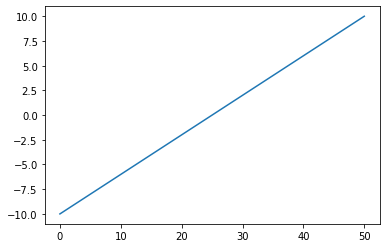
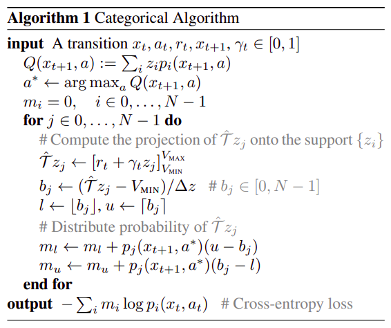

Softmaxtorch.nn.modules.activation.SoftmaxThe Categorical DQN can be summarized as:
Instead of action outputs being single Q values, they are instead distributions of `N` size.We start off with the idea of atoms and supports. A support acts as a mask over the output action distributions. This is illistrated by the equations and the corresponding functions.
We start with the equation…
\[ {\large Z_{\theta}(z,a) = z_i \quad w.p. \: p_i(x,a):= \frac{ e^{\theta_i(x,a)}} {\sum_j{e^{\theta_j(x,a)}}} } \]
… which shows that the end of our neural net model needs to be squished to be a proper probability. It also defines \(z_i\) which is a support we will define very soon. Below is the implimentation of the right side equation for \(p_i(x,a)\)
An important note is that $ {_j{e^{_j(x,a)}}} $ is just:
We pretend that the output of the neural net is of shape (batch_sz,n_actions,n_atoms). In this instance, there is only one action. This implies that \(Z_{\theta}\) is just \(z_0\).
The next function describes how propabilities are calculated from the neural net output. The equation describes a \(z_i\) which is explained by: \[ \{z_i = V_{min} + i\Delta z : 0 \leq i < N \}, \: \Delta z := \frac{V_{max} - V_{min}}{N - 1} \]
Where \(V_{max}\), \(V_{min}\), and \(N\) are constants that we define. Note that \(N\) is the number of atoms. So what does a \(z_i\) look like? We will define this in code below…
create_support (v_min=-10, v_max=10, n_atoms=51)
Creates the support and returns the z_delta that was used.
z_delta: 0.4
This is a single \(z_i\) in \(Z_{\theta}\). The number of \(z_i\)s is equal to the number of actions that the DQN is operating with.
Note: Josiah: Is this always the case? Could there be only \(z_0\) and multiple actions?
Ok! Hopefully this wasn’t too bad to go through. We basically normalized the neural net output to be nicer to deal with, and created/initialized a (bunch) of increasing arrays that we are calling discrete distributions i.e. output from create_support.
Now for the fun part! We have this giant ass update equation:
\[ {\large (\Phi\hat{\mathcal{T}}Z_{\theta}(x,a))_i = \sum_{j=0}^{N-1} \left[ 1 - \frac{ | \mathcal{T}z_j |_{V_{min}}^{V_{max}} - z_i }{ \Delta z } \right]_0^1 p_j(x^{\prime},\pi(x^{\prime})) } \] Good god… and we also have
\[ \hat{\mathcal{T}}z_j := r + \gamma z_j \]
where, to quote the paper:
I highly recommend reading pg6 in the paper for a fuller explaination. I was originally wondering what the difference was between \(\pi\) and simple \(\theta\), which the main difference is that \(\pi\) is a greedy action selection i.e. we run argmax to get the action.
This was a lot! Luckily they have a re-formalation in algorithmic form:
def categorical_update(v_min,v_max,n_atoms,support,delta_z,model,reward,gamma,action,next_state):
t_q=(support*Softmax(model(next_state).gather(action))).sum()
a_star=torch.argmax(t_q)
m=torch.zeros((N,)) # m_i = 0 where i in 1,...,N-1
for j in range(n_atoms):
# Compute the projection of $ \hat{\mathcal{T}}z_j $ onto support $ z_j $
target_z=torch.clamp(reward+gamma*support[:,j],v_min,v_max)
b_j=(target_z-v_min)/delta_z # b_j in [0,N-1]
l=torch.floor(b_j)
u=torch.ceil(b_j)
# Distribute probability of $ \hat{\mathcal{T}}z_j $
m[:,l]=m[:,l]+a_star*(u-b)
m[:,u]=m[:,u]+a_star*(b-l)
return # Some cross entropy lossThere is a small problem with the above equation. This was a (fairly) literal convertion from Algorithm 1 in the paper to Python. There are some problems here:
- The current setup doesnt handle batches - Some of the variables are a little vague - Does not handle terminal states
Lets rename these! We will instead have:
\[
m\_i \rightarrow projection\\
a\_star \rightarrow next\_action\\
b\_j \rightarrow support\_value\\
l \rightarrow support\_left\\
u \rightarrow support\_right\\
\]
So lets revise the problem and pretend that we have a 2 action model, batch size of 8, where the last element has a reward of 0, and where left actions are -1, while right actions are 1.
So for a single action we would have a distribution like this…
So since our model has 2 actions that it can pick, we create some distributions for them…
dist_left=torch.vstack([Normal(0.5,1).sample((1,51)),Normal(0.5,0.1).sample((1,51))]).unsqueeze(0)
dist_right=torch.vstack([Normal(0.5,0.1).sample((1,51)),Normal(0.5,1).sample((1,51))]).unsqueeze(0)
(dist_left.shape,dist_right.shape)(torch.Size([1, 2, 51]), torch.Size([1, 2, 51]))…where the \([1, 2, 51]\) is \([batch, action, n\_atoms]\)
model_out=torch.vstack([copy([dist_left,dist_right][i%2==0]) for i in range(1,9)]).to(device=default_device())
(model_out.shape)torch.Size([8, 2, 51])summed_model_out=model_out.sum(dim=2);summed_model_out=Softmax(dim=1)(summed_model_out).to(device=default_device())
(summed_model_out.shape,summed_model_out)(torch.Size([8, 2]),
tensor([[0.1954, 0.8046],
[0.0060, 0.9940],
[0.1954, 0.8046],
[0.0060, 0.9940],
[0.1954, 0.8046],
[0.0060, 0.9940],
[0.1954, 0.8046],
[0.0060, 0.9940]], device='cuda:0'))So when we sum/normalize the distrubtions per batch, per action, we get an output that looks like your typical dqn output…
We can also treat this like a regular DQN and do an argmax to get actions like usual…
tensor([[1],
[1],
[1],
[1],
[1],
[1],
[1],
[1]], device='cuda:0')tensor([[False],
[False],
[False],
[False],
[False],
[False],
[False],
[ True]], device='cuda:0')So lets decompose the categorical_update above into something easier to read. First we will note the author’s original algorithm:

We can break this into 3 different functions:
- getting the Q
- calculating the update
- calculating the loss
We will start with the \(Q(x_{t+1},a):=\sum_iz_ip_i(x_{t_1},a))\)
CategoricalDQN (state_sz:int, action_sz:int, n_atoms:int=51, hidden=512, v_min=-10, v_max=10, head_layer=<class 'torch.nn.modules.linear.Linear'>, activation_fn=<class 'torch.nn.modules.activation.ReLU'>)
Same as nn.Module, but no need for subclasses to call super().__init__
The CategoricalDQN.q function gets us 90% of the way to the equation above. However, you will notice that that equation is for a specific action. We will handle this in the actual update function.
dqn=CategoricalDQN(4,2).to(device=default_device())
dqn(torch.randn(8,4).to(device=default_device())).shapetorch.Size([8, 2, 51])tensor([[ 0.3418, -0.2006],
[ 0.1096, -0.0358],
[-0.2790, 0.0382],
[ 0.1743, 0.0024],
[-0.5164, 0.0867],
[-0.0825, -0.0634],
[-0.5792, 0.2759],
[-0.0598, -0.0087]], device='cuda:0', grad_fn=<SumBackward1>)tensor([[-0.0020, 0.0022],
[-0.0043, -0.0014],
[-0.0063, 0.0037],
[-0.0079, 0.0028],
[-0.0001, 0.0039],
[-0.0001, -0.0017],
[-0.0008, 0.0004],
[-0.0108, 0.0052]], device='cuda:0', grad_fn=<MeanBackward1>)final_distribute (projection, left, right, support_value, p_a, atom, done)
Does: m_l <- m_l + p_j(x_{t+1},a*)(u - b_j) operation for final states.
distribute (projection, left, right, support_value, p_a, atom, done)
Does: m_l <- m_l + p_j(x_{t+1},a*)(u - b_j) operation for non-final states.
categorical_update (support, delta_z, q, p, actions, rewards, dones, v_min=-10, v_max=10, n_atoms=51, gamma=0.99, passes=None, nsteps=1, debug=False)
show_q_distribution (cat_dist, title='Update Distributions')
cat_dist being shape: (bs,n_atoms)
output=categorical_update(dqn.supports,dqn.z_delta,summed_model_out,
Softmax(dim=2)(model_out),actions,rewards,dones,passes=None)
show_q_distribution(output)q=dqn.q(torch.randn(8,4).to(device=default_device()))
p=dqn.p(torch.randn(8,4).to(device=default_device()))
output=categorical_update(dqn.supports,dqn.z_delta,q,p,actions,rewards,dones)
show_q_distribution(output,title='Real Model Update Distributions')PartialCrossEntropy (p, q)
CategoricalTargetQCalc (*args, **kwds)
Iterable-style DataPipe.
All DataPipes that represent an iterable of data samples should subclass this. This style of DataPipes is particularly useful when data come from a stream, or when the number of samples is too large to fit them all in memory. IterDataPipe is lazily initialized and its elements are computed only when next() is called on the iterator of an IterDataPipe.
All subclasses should overwrite :meth:__iter__, which would return an iterator of samples in this DataPipe. Calling __iter__ of an IterDataPipe automatically invokes its method reset(), which by default performs no operation. When writing a custom IterDataPipe, users should override reset() if necessary. The common usages include resetting buffers, pointers, and various state variables within the custom IterDataPipe.
Note: Only one iterator can be valid for each IterDataPipe at a time, and the creation a second iterator will invalidate the first one. This constraint is necessary because some IterDataPipe have internal buffers, whose states can become invalid if there are multiple iterators. The code example below presents details on how this constraint looks in practice. If you have any feedback related to this constraint, please see GitHub IterDataPipe Single Iterator Issue_.
These DataPipes can be invoked in two ways, using the class constructor or applying their functional form onto an existing IterDataPipe (recommended, available to most but not all DataPipes). You can chain multiple IterDataPipe together to form a pipeline that will perform multiple operations in succession.
.. _GitHub IterDataPipe Single Iterator Issue: https://github.com/pytorch/data/issues/45
Note: When a subclass is used with :class:~torch.utils.data.DataLoader, each item in the DataPipe will be yielded from the :class:~torch.utils.data.DataLoader iterator. When :attr:num_workers > 0, each worker process will have a different copy of the DataPipe object, so it is often desired to configure each copy independently to avoid having duplicate data returned from the workers. :func:~torch.utils.data.get_worker_info, when called in a worker process, returns information about the worker. It can be used in either the dataset’s :meth:__iter__ method or the :class:~torch.utils.data.DataLoader ’s :attr:worker_init_fn option to modify each copy’s behavior.
Examples: General Usage: >>> # xdoctest: +SKIP >>> from torchdata.datapipes.iter import IterableWrapper, Mapper >>> dp = IterableWrapper(range(10)) >>> map_dp_1 = Mapper(dp, lambda x: x + 1) # Using class constructor >>> map_dp_2 = dp.map(lambda x: x + 1) # Using functional form (recommended) >>> list(map_dp_1) [1, 2, 3, 4, 5, 6, 7, 8, 9, 10] >>> list(map_dp_2) [1, 2, 3, 4, 5, 6, 7, 8, 9, 10] >>> filter_dp = map_dp_1.filter(lambda x: x % 2 == 0) >>> list(filter_dp) [2, 4, 6, 8, 10] Single Iterator Constraint Example: >>> from torchdata.datapipes.iter import IterableWrapper, Mapper >>> dp = IterableWrapper(range(10)) >>> it1 = iter(source_dp) >>> list(it1) [0, 1, 2, 3, 4, 5, 6, 7, 8, 9] >>> it1 = iter(source_dp) >>> it2 = iter(source_dp) # The creation of a new iterator invalidates it1 >>> next(it2) 0 >>> next(it1) # Further usage of it1 will raise a RunTimeError
MultiModelRunner (*args, **kwds)
If a model contains multiple models, then we support selecting a sub model.
# Setup Loggers
logger_base = ProgressBarLogger(epoch_on_pipe=EpocherCollector,
batch_on_pipe=BatchCollector)
# Setup up the core NN
torch.manual_seed(0)
model = CategoricalDQN(4,2).to(device='cuda')
# Setup the Agent
agent = DQNAgent(model,[logger_base],max_steps=4000,device='cuda',
dp_augmentation_fns=[
MultiModelRunner.replace_dp(device='cuda')
])
# Setup the DataBlock
block = DataBlock(
GymTransformBlock(agent=agent,nsteps=2,nskips=2,firstlast=True), # We basically merge 2 steps into 1 and skip.
(GymTransformBlock(agent=agent,nsteps=2,nskips=2,firstlast=True,n=100,include_images=True),VSCodeTransformBlock())
)
# pipes = L(block.datapipes(['CartPole-v1']*1,n=10))
dls = L(block.dataloaders(['CartPole-v1']*1))
# Setup the Learner
learner = DQNLearner(model,dls,logger_bases=[logger_base],bs=128,
batches=1000,
loss_func = PartialCrossEntropy,
device='cuda',
max_sz=100_000,
lr=0.001,
dp_augmentation_fns=[
TargetModelUpdater.insert_dp(),
CategoricalTargetQCalc.replace_remove_dp(device='cuda',nsteps=2,double_dqn_strategy=True)
])
learner.fit(1)
# learner.fit(7)| loss | episode | rolling_reward | epoch | batch | epsilon |
|---|---|---|---|---|---|
| 2.8483639 | 65 | 30.870000 | 0 | 1001 | 0.523000 |
show_q (cat_dist, title='Update Distributions')
cat_dist being shape: (bs,n_atoms)